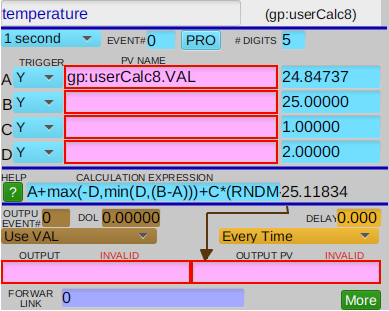
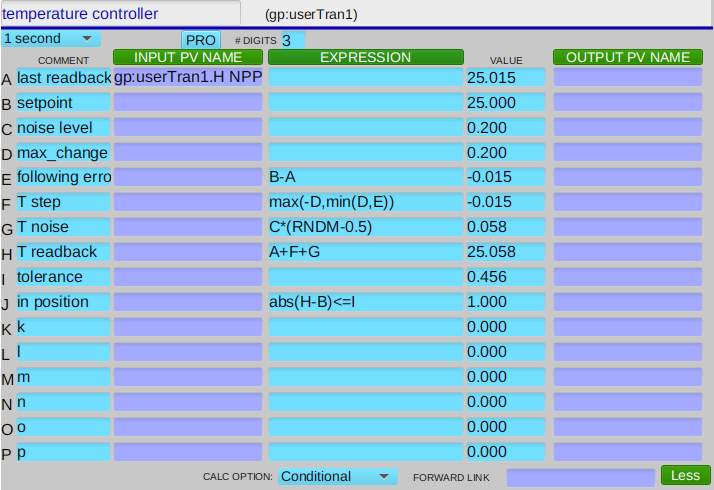

Simulate a temperature controller with an EPICS swait record#
TODO: This HowTo is written as a tutorial (how to setup the swait record then apply it as a positioner). Refactor into a HowTo (cut directly to use of the swait record) using apstools.devices.SimulatedSwaitControllerPositioner. Then make a new notebook for apstools.devices.SimulatedTransformControllerPositioner.
Learn how to create a simulated temperature controller with Bluesky and an EPICS swait record. We’ll show how to simulate the controller in EPICS and use that simulation as a positioner in Bluesky.
In this simulation, the swait record provides the computations for the feedback loop that updates the simulated temperature.
Connect with a swait record#
We’ll connect with the gp:userCalc18 PV, an instance of an EPICS swait record in our example IOC. We’ll create the ophyd controller object using the SwaitRecord structure from the apstools package.
[10]:
from apstools.synApps import SwaitRecord
controller = SwaitRecord("gp:userCalc8", name="simulator")
controller.wait_for_connection()
print(f"{controller.read()=}\n{controller.read_configuration()=}")
controller.read()=OrderedDict([('simulator_calculated_value', {'value': 0.0, 'timestamp': 631152000.0})])
controller.read_configuration()=OrderedDict([('simulator_description', {'value': 'userCalc 8', 'timestamp': 631152000.0}), ('simulator_scanning_rate', {'value': 0, 'timestamp': 631152000.0}), ('simulator_disable_value', {'value': 0, 'timestamp': 631152000.0}), ('simulator_scan_disable_input_link_value', {'value': 0, 'timestamp': 631152000.0}), ('simulator_scan_disable_value_input_link', {'value': 'gp:userCalcEnable.VAL CA MS', 'timestamp': 631152000.0}), ('simulator_forward_link', {'value': '', 'timestamp': 631152000.0}), ('simulator_device_type', {'value': 0, 'timestamp': 631152000.0}), ('simulator_alarm_status', {'value': 17, 'timestamp': 631152000.0}), ('simulator_alarm_severity', {'value': 3, 'timestamp': 631152000.0}), ('simulator_new_alarm_status', {'value': 0, 'timestamp': 631152000.0}), ('simulator_new_alarm_severity', {'value': 0, 'timestamp': 631152000.0}), ('simulator_disable_alarm_severity', {'value': 0, 'timestamp': 631152000.0}), ('simulator_precision', {'value': 5, 'timestamp': 631152000.0}), ('simulator_high_operating_range', {'value': 0.0, 'timestamp': 631152000.0}), ('simulator_low_operating_range', {'value': 0.0, 'timestamp': 631152000.0}), ('simulator_calculation', {'value': '0', 'timestamp': 631152000.0}), ('simulator_output_link_pv', {'value': '', 'timestamp': 631152000.0}), ('simulator_output_location_name', {'value': '', 'timestamp': 631152000.0}), ('simulator_output_location_data', {'value': 0.0, 'timestamp': 631152000.0}), ('simulator_output_data_option', {'value': 0, 'timestamp': 631152000.0}), ('simulator_output_execute_option', {'value': 0, 'timestamp': 631152000.0}), ('simulator_output_execution_delay', {'value': 0.0, 'timestamp': 631152000.0}), ('simulator_event_to_issue', {'value': 0, 'timestamp': 631152000.0}), ('simulator_channels_A_input_value', {'value': 0.0, 'timestamp': 631152000.0}), ('simulator_channels_A_input_pv', {'value': '', 'timestamp': 631152000.0}), ('simulator_channels_A_input_trigger', {'value': 1, 'timestamp': 631152000.0}), ('simulator_channels_B_input_value', {'value': 0.0, 'timestamp': 631152000.0}), ('simulator_channels_B_input_pv', {'value': '', 'timestamp': 631152000.0}), ('simulator_channels_B_input_trigger', {'value': 1, 'timestamp': 631152000.0}), ('simulator_channels_C_input_value', {'value': 0.0, 'timestamp': 631152000.0}), ('simulator_channels_C_input_pv', {'value': '', 'timestamp': 631152000.0}), ('simulator_channels_C_input_trigger', {'value': 1, 'timestamp': 631152000.0}), ('simulator_channels_D_input_value', {'value': 0.0, 'timestamp': 631152000.0}), ('simulator_channels_D_input_pv', {'value': '', 'timestamp': 631152000.0}), ('simulator_channels_D_input_trigger', {'value': 1, 'timestamp': 631152000.0}), ('simulator_channels_E_input_value', {'value': 0.0, 'timestamp': 631152000.0}), ('simulator_channels_E_input_pv', {'value': '', 'timestamp': 631152000.0}), ('simulator_channels_E_input_trigger', {'value': 1, 'timestamp': 631152000.0}), ('simulator_channels_F_input_value', {'value': 0.0, 'timestamp': 631152000.0}), ('simulator_channels_F_input_pv', {'value': '', 'timestamp': 631152000.0}), ('simulator_channels_F_input_trigger', {'value': 1, 'timestamp': 631152000.0}), ('simulator_channels_G_input_value', {'value': 0.0, 'timestamp': 631152000.0}), ('simulator_channels_G_input_pv', {'value': '', 'timestamp': 631152000.0}), ('simulator_channels_G_input_trigger', {'value': 1, 'timestamp': 631152000.0}), ('simulator_channels_H_input_value', {'value': 0.0, 'timestamp': 631152000.0}), ('simulator_channels_H_input_pv', {'value': '', 'timestamp': 631152000.0}), ('simulator_channels_H_input_trigger', {'value': 1, 'timestamp': 631152000.0}), ('simulator_channels_I_input_value', {'value': 0.0, 'timestamp': 631152000.0}), ('simulator_channels_I_input_pv', {'value': '', 'timestamp': 631152000.0}), ('simulator_channels_I_input_trigger', {'value': 1, 'timestamp': 631152000.0}), ('simulator_channels_J_input_value', {'value': 0.0, 'timestamp': 631152000.0}), ('simulator_channels_J_input_pv', {'value': '', 'timestamp': 631152000.0}), ('simulator_channels_J_input_trigger', {'value': 1, 'timestamp': 631152000.0}), ('simulator_channels_K_input_value', {'value': 0.0, 'timestamp': 631152000.0}), ('simulator_channels_K_input_pv', {'value': '', 'timestamp': 631152000.0}), ('simulator_channels_K_input_trigger', {'value': 1, 'timestamp': 631152000.0}), ('simulator_channels_L_input_value', {'value': 0.0, 'timestamp': 631152000.0}), ('simulator_channels_L_input_pv', {'value': '', 'timestamp': 631152000.0}), ('simulator_channels_L_input_trigger', {'value': 1, 'timestamp': 631152000.0})])
Create a function to setup the controller#
Create a function to configure the swait record as a simulated temperature controller. The “controller” will update the current computed value (the readback) at period based on the setpoint. Note that period here is one of the preset EPICS .SCAN field values. Pick from any of these values (from the table at this reference):
"10 second""5 second""2 second""1 second"".5 second"".2 second"".1 second"
Be certain to use the exact text string as shown.
The swait record will compute the step size based on the difference between the previous value and the setpoint, limited to the maximum step size. Random noise is applied to each new computation. The fields of the swait record in this simulation are described in the next table:
field |
description |
|---|---|
|
readback |
|
setpoint |
|
previous value |
|
noise level |
|
maximum change |
|
calculation expression |
|
record scan |
The calculation will simulate a feedback loop which reduces the value of abs(readback - setpoint).
[11]:
def setup_controller(
swait,
setpoint=None,
label="controller",
noise=2,
period="1 second",
max_change=2
):
swait.reset() # remove any prior configuration
swait.description.put(label)
swait.channels.A.input_pv.put(swait.calculated_value.pvname)
if setpoint is not None:
swait.calculated_value.put(setpoint) # preset
swait.channels.A.input_value.put(setpoint) # readback
swait.channels.B.input_value.put(setpoint) # setpoint
swait.channels.C.input_value.put(noise) # 2 * noise amplitude
swait.channels.D.input_value.put(max_change)
swait.scanning_rate.put(period)
swait.calculation.put("A+max(-D,min(D,(B-A)))+C*(RNDM-0.5)")
Setup our controller#
Setup our controller with a (randomly-selected) setpoint and scan period.
[12]:
import random
setup_controller(controller, 10 + 30 * random.random(), period="1 second", label="temperature")
Once configured, the control screen for this swait record should look like this screen view:

Watch the controller as it starts for a short time. The readback should already be very close (within random noise) to the setpoint value.
[13]:
import time
t0 = time.time()
for i in range(5):
time.sleep(1)
print(
f"{time.time() - t0:.2f}s:"
f" readback={controller.calculated_value.get():.2f}"
f" setpoint={controller.channels.B.input_value.get():.2f}"
)
1.00s: readback=19.20 setpoint=19.81
2.01s: readback=20.74 setpoint=19.81
3.01s: readback=18.95 setpoint=19.81
4.01s: readback=19.22 setpoint=19.81
5.01s: readback=19.53 setpoint=19.81
temperature as a positioner#
A positioner is a device that has both a readback (the current measured value) and a setpoint (the expected, or demanded, value of the device). These are available as EPICS PVs from our swait record. We can obtain these directly from our ophyd controller object:
signal |
swait field |
ophyd object |
|---|---|---|
readback |
|
|
setpoint |
|
|
We’ll create the ophyd temperature positioner object using the PVPositionerSoftDoneWithStop structure from the apstools package.
[14]:
from apstools.devices import PVPositionerSoftDoneWithStop
temperature = PVPositionerSoftDoneWithStop(
"",
name="temperature",
readback_pv=controller.calculated_value.pvname,
setpoint_pv=controller.channels.B.input_value.pvname,
tolerance=1,
)
temperature.wait_for_connection()
print(f"{temperature.position=}")
temperature.position=19.527702862815946
Change the setpoint#
Watch the readback after the setpoint is changed, until the temperature becomes inposition (inposition is a property that reports a True/False value determined by abs(readback - setpoint) <= tolerance).
Here, we lower the temperature setpoint by 10 from the current readback value. Then, monitor the readback value until inposition.
[15]:
temperature.setpoint.put(temperature.readback.get() - 10)
t0 = time.time()
while not temperature.inposition:
time.sleep(1)
print(
f"{time.time() - t0:.2f}s:"
f" readback={temperature.readback.get():.2f}"
f" setpoint={temperature.setpoint.get():.2f}"
)
1.00s: readback=17.39 setpoint=9.53
2.00s: readback=16.22 setpoint=9.53
3.00s: readback=14.24 setpoint=9.53
4.01s: readback=12.67 setpoint=9.53
5.01s: readback=10.00 setpoint=9.53
Move the temperature as a positioner#
Here, we treat the temperature object as a positioner.
Tip: In ophyd, a positioner object has a move() method and a position property. The position property is a shortcut for readback.get().
[16]:
temperature.position
[16]:
9.998062212781615
Set the temperature to 25 and wait for the move to complete. A MoveStatus object is returned by the move() method.
Tip: Python prints the value of the last object shown. In this case, Python prints the value of the MoveStatus object. It shows that that the move is done, how long it took, whether the move was successful, and other information.
[17]:
temperature.move(25)
[17]:
MoveStatus(done=True, pos=temperature, elapsed=7.2, success=True, settle_time=0.0)
Make a move relative to the current (readback) position:
[18]:
temperature.move(temperature.position + 5)
[18]:
MoveStatus(done=True, pos=temperature, elapsed=3.0, success=True, settle_time=0.0)
Make a move relative to the current setpoint:
[19]:
temperature.move(temperature.setpoint.get() - 5)
[19]:
MoveStatus(done=True, pos=temperature, elapsed=2.0, success=True, settle_time=0.0)
Use the temperature positioner with a bluesky plan#
The temperature positioner may be used as a detector or a positioner in a bluesky plan.
First, setup the bluesky objects needed for scanning and reporting. We won’t need plots nor will we need to save any data. Also create a convenience function to report the current parameters of the positioner.
[20]:
from bluesky.run_engine import RunEngine
from bluesky import plans as bp
from bluesky import plan_stubs as bps
from bluesky.callbacks.best_effort import BestEffortCallback
bec = BestEffortCallback()
RE = RunEngine()
RE.subscribe(bec)
bec.disable_plots()
def print_position(pos):
print(
f"inposition={pos.inposition}"
f" position={pos.position:.3f}"
f" setpoint={pos.setpoint.get():.3f}"
)
Set the temperature to 25 using a bluesky plan stub (bps.mv()). Here, bps.mv() will set the temperature to an absolute value.
A plan stub can be used directly with the RE() as shown here, or as part of another bluesky plan.
[21]:
print_position(temperature)
RE(bps.mv(temperature, 25))
print_position(temperature)
inposition=True position=23.828 setpoint=24.165
inposition=True position=24.015 setpoint=25.000
bps.mvr() will make a relative move. Decrease the temperature by 5.
Note that bps.mvr() has set the new setpoint to exactly 5 below the previous readback value (not from the previous setpoint value).
[22]:
print_position(temperature)
RE(bps.mvr(temperature, -5))
print_position(temperature)
inposition=True position=24.015 setpoint=25.000
inposition=True position=18.230 setpoint=19.015
We can change the setpoint value directly. But notice that the temperature is not inposition immediately. This is because we asked for bluesky to wait only until setpoint changed, which happened almost instantly.
[23]:
print_position(temperature)
RE(bps.mvr(temperature.setpoint, 5))
print_position(temperature)
inposition=True position=18.230 setpoint=19.015
inposition=False position=18.230 setpoint=24.015
We can measure the readback value (over time) by using temperature as a detector. Here we use the bp.count plan, making 5 readings at 1 second intervals. A data table is printed since this is one of the bluesky plans (bp) that create a run which collects data.
Tip If this cell is executed immediately after the preceding cell, then it will follow the readback as it approaches the new setpoint.
[24]:
RE(bp.count([temperature], delay=1, num=5))
Transient Scan ID: 1 Time: 2023-12-27 13:12:05
Persistent Unique Scan ID: '83e470c4-84b3-4669-8828-1ef0bb74a777'
New stream: 'primary'
+-----------+------------+-------------+
| seq_num | time | temperature |
+-----------+------------+-------------+
| 1 | 13:12:05.4 | 18.22953 |
| 2 | 13:12:06.4 | 20.03035 |
| 3 | 13:12:07.4 | 22.95103 |
| 4 | 13:12:08.4 | 24.51171 |
| 5 | 13:12:09.4 | 23.83296 |
+-----------+------------+-------------+
generator count ['83e470c4'] (scan num: 1)
[24]:
('83e470c4-84b3-4669-8828-1ef0bb74a777',)
To demonstrate the use of temperature as a positioner in a scan, we’ll need another signal to use as a detector. We’ll create a simple ophyd Signal with a value that does not change.
[25]:
from ophyd import Signal
det = Signal(name="det", value="123.45")
To see the temperature setpoint reported in the table, set its kind attribute to "hinted". Hinted attributes are shown (and plotted) when they are used as detectors.
[26]:
temperature.setpoint.kind = "hinted"
Scan det vs. temperature in 5 steps from 20..40. See how it is the setpoint which is advanced in even steps. The bp.scan() plan adjusts the setpoint at each step, waits for the move to complete, then triggers and reads the detectors.
[27]:
RE(bp.scan([det], temperature, 20, 40, 5))
Transient Scan ID: 2 Time: 2023-12-27 13:12:10
Persistent Unique Scan ID: 'e4043fdc-debb-4a63-839d-2019230b63fe'
New stream: 'primary'
+-----------+------------+-------------+----------------------+------------+
| seq_num | time | temperature | temperature_setpoint | det |
+-----------+------------+-------------+----------------------+------------+
| 1 | 13:12:12.4 | 20.05370 | 20.00000 | 123 |
| 2 | 13:12:14.4 | 24.35966 | 25.00000 | 123 |
| 3 | 13:12:14.4 | 24.35966 | 30.00000 | 123 |
| 4 | 13:12:20.4 | 34.65895 | 35.00000 | 123 |
| 5 | 13:12:23.4 | 39.39283 | 40.00000 | 123 |
+-----------+------------+-------------+----------------------+------------+
generator scan ['e4043fdc'] (scan num: 2)
[27]:
('e4043fdc-debb-4a63-839d-2019230b63fe',)
bp.rel_scan() chooses its limits relative to the current position. Here we scan from -17 to 3, relative to the current position.
[28]:
print_position(temperature)
RE(bp.rel_scan([det], temperature, -17, 3, 5))
inposition=True position=39.393 setpoint=40.000
Transient Scan ID: 3 Time: 2023-12-27 13:12:23
Persistent Unique Scan ID: 'f1cc2819-cd3d-4efa-b401-3f9dddceb5d1'
New stream: 'primary'
+-----------+------------+-------------+----------------------+------------+
| seq_num | time | temperature | temperature_setpoint | det |
+-----------+------------+-------------+----------------------+------------+
| 1 | 13:12:23.5 | 39.39283 | 22.39283 | 123 |
| 2 | 13:12:29.4 | 28.36643 | 27.39283 | 123 |
| 3 | 13:12:31.4 | 32.06715 | 32.39283 | 123 |
| 4 | 13:12:33.4 | 36.75387 | 37.39283 | 123 |
| 5 | 13:12:37.4 | 41.97115 | 42.39283 | 123 |
+-----------+------------+-------------+----------------------+------------+
generator rel_scan ['f1cc2819'] (scan num: 3)
[28]:
('f1cc2819-cd3d-4efa-b401-3f9dddceb5d1',)
SimulatedTransformControllerPositioner device#
Combine the setup steps into a single ophyd Device to make a simulator. Show the support code first:
[29]:
from apstools.devices import SimulatedTransformControllerPositioner
temperature = SimulatedTransformControllerPositioner(
"", name="controller", loop_pv="gp:userTran1"
)
temperature.wait_for_connection()
temperature.setup(25, label="temperature controller", noise=0.2, max_change=1, tolerance=0.999)
Demonstrate the class by setting up a new temperature controller using a different swait record.
[30]:
t17 = SimulatedTransformControllerPositioner(
"", name="t17", loop_pv="gp:userTran17", tolerance=1,
)
t17.wait_for_connection()
t17.setup(25, label="t17 controller")
Screen view of the transform record.
